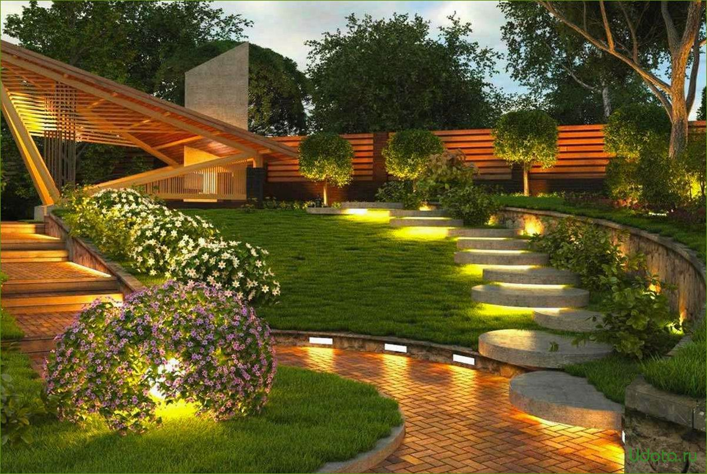

О нас
В отличие от садоводства и огородничества, основная задача которых имеет сельскохозяйственную направленность (повышение урожайности садово-огородных культур), ландшафтный дизайн — более общая и универсальная дисциплина. Главная задача ландшафтного дизайна — создание гармонии, красоты в сочетании с удобствами использования инфраструктуры зданий, сглаживание конфликтности между урбанизационными формами и природой, зачастую от них страдающей.
Ландшафтный дизайн может быть частным случаем более общего понятия — ландшафтного проектирования.
Наши работы
